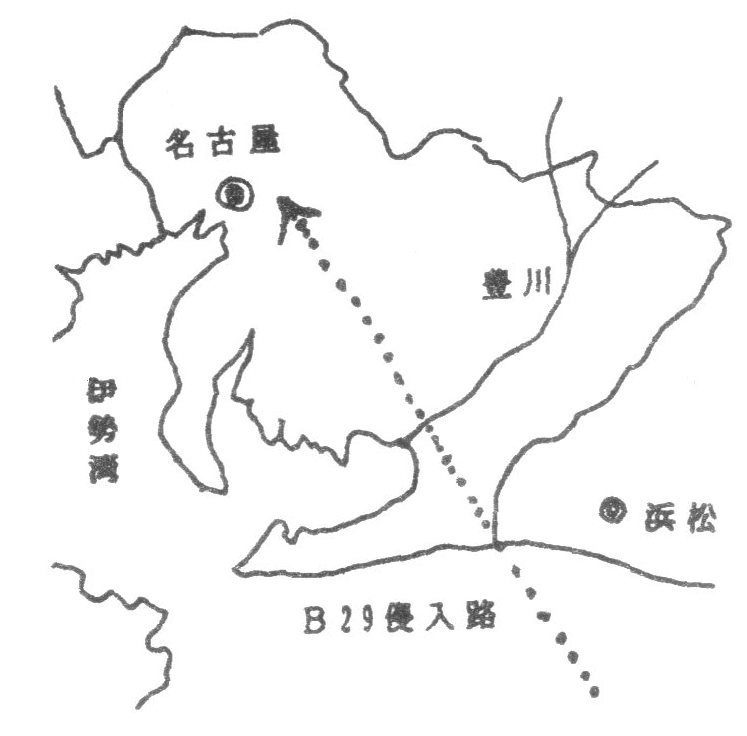
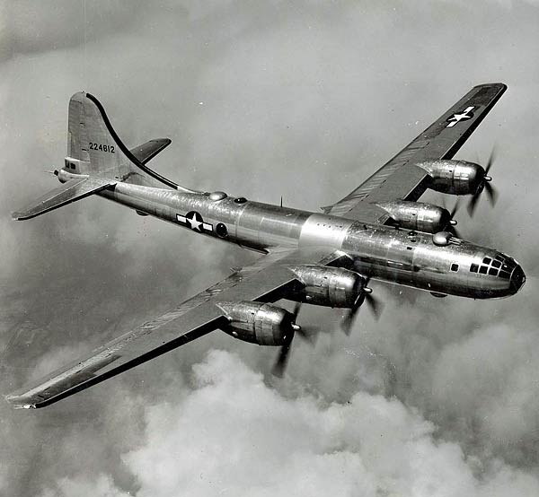

昭和二十年八月十五日、真夏の突き刺すような強い日差しが頭の上から照りつける中、私たち国民学校六年生は「豊川」(愛知県)の石だらけの河原を掘り起こしていました。 戦局が逼迫するにつれ田舎でも食料が不足しこんな荒れ果てた河原を耕して「さつまいも」畑にしようというのです。 朝早く、めいめいが太い竹の先を鋭く尖らせた「竹槍」を持って集合し、先生の号令のもと竹槍を突く練習をし、続いて重い唐鍬(くわ)を振り上げて開墾をしていたのです。
戦争は益々激しさを増し、連日のように頭の上をB29の大編隊が通り過ぎていきました。

新聞では、日本の特別攻撃隊が敵艦に体当たりして、 「敵戦艦〇隻撃沈」とか「〇隻大破」とかの“大戦果”が報じられていました。 しかし一方では〇〇島の守備隊が全員玉砕した、〇〇島へ“転進”したというような記事や頭の上を自分の国土のように悠々と飛んでいくB29の大編隊を見て、子ども心にも疑問が沸き 「アメリカ軍がすぐに上陸してくる」という噂もあってもしアメリカ軍に見つかったら皮を剥がれて皆殺しにされると信じていた人が多く、「もうこの世は終わり」という雰囲気の日々でした。
さて、河原の開墾に励んでいた私たちに思いがけなく「今日は午前中で終わり」という先生の話がありました。 さらに、「お昼にとても大事な放送があるから必ず聞くように」と言われました。私たちは帰路につきました。
小さな身体で長い「竹槍」を持ち同じ方向へ帰る七〜八人の一団は、重い足を引き摺りながら炎天下の道を歩いて帰りました。 途中で一軒の店先で私たちはラジオを聞きました。ほかにも大人の人が何人かいて、皆帽子をとってうなだれていたので私たちも真似をして放送を聞きました。 それは天皇(昭和天皇)の声でした。誰かが、「天皇陛下の声だ」といったのでわかったように記境しています。
放送の中身は分かりませんでしたが、大人の人達の会話を聞いてなんとなく「戦争が終わったのだ」ということを感じほっと一安心したのを今でも鮮明に覚えています。 族送を聞いて怒り狂い、聞いていたラジオたたき壊したという話や、近くの軍隊の地下トンネルでは、それまで威張っていた将校が皆に殴られたとかいろいろな話を聞きました。 その後の混乱は筆舌に尺くせないものでしたが、その頃は日本が今のような姿になろうとはとても想像できませんでした。
私が今でも一番疑問に思っていることは、時の為政者は別として一般の人々がこの戦争をどう思っていたかということです。 戦後になって、戦争遂行のために厳しく言論統制をし、軍部を批判する者は容赦なく連行され、治安維持法等で重く罰せられたことを知りました。 自由にものが言えないから仕方なく戦争に協力していたのか心から日本のための、アジアのための正当な戦いであると思っていたのか…………。
あの頃を思い出す時、轟音をたてて通り過ぎるB29と、自作の竹槍で藁(わら)人形を相手に一生懸命つく練習をしている自分の姿が二重になって脳裏をかすめるのです。
B29

第二次世界大戦中にアメリカのボーイング社が開発した大型戦略爆撃機。
日本への空襲の多くを担い、広島と長崎への原爆投下にも使用された、歴史的に大きな影響を与えた航空機です。
4基の新型エンジンを搭載し、1万メートル以上の高度を飛行可能でした。 機体のサイズは全長３０．２メートル、全幅４３．１メートル。 機体中央に設けた爆弾倉には、最大９トンの爆弾や焼夷（しょうい）弾を搭載することが可能で、大きな攻撃力を持っていた。 また、リモコン操作式の対空銃塔を装備したほか、航法爆撃レーダーによる高高度精密爆撃を可能にするなど、 当時の最新技術が投入され、その性能の高さから「スーパーフォートレス（『超』要塞）というニックネームで呼ばれた
引用: 時事通信社